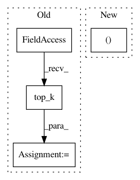

1dffde32fc1d9bce8bfadb5c3f58160d26f70ea8,official/vision/detection/ops/postprocess_ops.py,,_generate_detections,#Any#Any#Any#Any#Any#Any#,46
Before Change
boxes_i = boxes[:, :, min(num_classes_for_box - 1, i), :]
scores_i = scores[:, :, i]
// Obtains pre_nms_num_boxes before running NMS.
scores_i, indices = tf.nn.top_k(
scores_i,
k=tf.minimum(tf.shape(input=scores_i)[-1], pre_nms_num_boxes))
boxes_i = tf.gather(boxes_i, indices, batch_dims=1, axis=1)
// Filter out scores.
boxes_i, scores_i = box_utils.filter_boxes_by_scores(
After Change
boxes_i = boxes[:, :, min(num_classes_for_box - 1, i), :]
scores_i = scores[:, :, i]
// Obtains pre_nms_num_boxes before running NMS.
boxes_i = tf.gather(boxes_i, indices[:, :, i], batch_dims=1, axis=1)
// Filter out scores.
boxes_i, scores_i = box_utils.filter_boxes_by_scores(
In pattern: SUPERPATTERN
Frequency: 3
Non-data size: 4
Instances
Project Name: tensorflow/models
Commit Name: 1dffde32fc1d9bce8bfadb5c3f58160d26f70ea8
Time: 2019-12-02
Author: gardener@tensorflow.org
File Name: official/vision/detection/ops/postprocess_ops.py
Class Name:
Method Name: _generate_detections
Project Name: Microsoft/nni
Commit Name: 55b557f17385ca10b8a3e8fb8bbb0d3799906db5
Time: 2019-11-20
Author: 38930155+chicm-ms@users.noreply.github.com
File Name: src/sdk/pynni/nni/compression/tensorflow/builtin_pruners.py
Class Name: FPGMPruner
Method Name: _get_min_gm_kernel_idx
Project Name: tensorflow/cleverhans
Commit Name: c29b38a31956222003e14d6e968b5e74666c46ae
Time: 2019-04-11
Author: haojie.d.yuan@gmail.com
File Name: cleverhans/attacks/lbfgs.py
Class Name: LBFGS
Method Name: generate